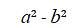

Diferencia de cuadrados perfectos
Para factorizar una diferencia de cuadrados es necesario saber identificarlos, esta ecuación solo tiene dos términos, es decir, es un binomio. Ambos términos tienen raíces cuadradas exactas. En cuanto a los signos un término es positivo y el otro es negativo, o explicado de otra forma la operación que se realiza es una resta.
De estas características viene su nombre diferencia de cuadrados, diferencia hace alusión a una resta y cuadrados indica que los términos están elevados al cuadrado. Esto quiere decir que se le puede sacar raiz cuadrada exacta.
Una diferencia de cuadrados, como su nombre lo indica, es una
expresión de la forma: 
Por ejemplo, la expresión:
es una diferencia de cuadrados pues,
Del estudio de los productos notables sabemos que la suma por la
diferencia de dos términos es igual a la diferencia de los cuadrados de
los términos correspondientes. Por ejemplo, el producto indicado.
Es igual a la diferencia del cuadrado de 2x y el cuadrado de 5:
Es decir;
De aquí, por simetría, obtenemos la igualdad equivalente:
Resultando que la descomposición factorial de consta de dos factores, el primero de los cuales es la suma de las raíces cuadradas de y el segundo factor es la diferencia entre esas mismas raíces.
En general, de los productos notables se sabe que:
Luego, aplicando la simetría de la igualdad se obtiene que la descomposición factorial de una diferencia de cuadrados,  es igual al producto de la suma de las raíces cuadradas del minuendo y el sustraendo por la diferencia de esas mismas raíces, es decir,
es igual al producto de la suma de las raíces cuadradas del minuendo y el sustraendo por la diferencia de esas mismas raíces, es decir,
es igual al producto de la suma de las raíces cuadradas del minuendo y el sustraendo por la diferencia de esas mismas raíces, es decir,